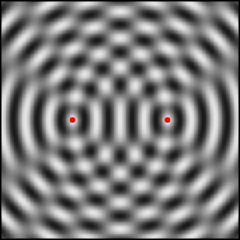

This simulation shows a two-dimensional interference pattern. The color is white at the wave crest and black at the wave trough. Use it to study how the familiar wave parameters, such as the wavelength and period, influence this two-dimensional representation. How would you characterize the wave function between the two sources? How would you characterize the wave function to the right or left of these sources? What happens when the separation is zero?
Note: You can click drag within this simulation to change the source separation.